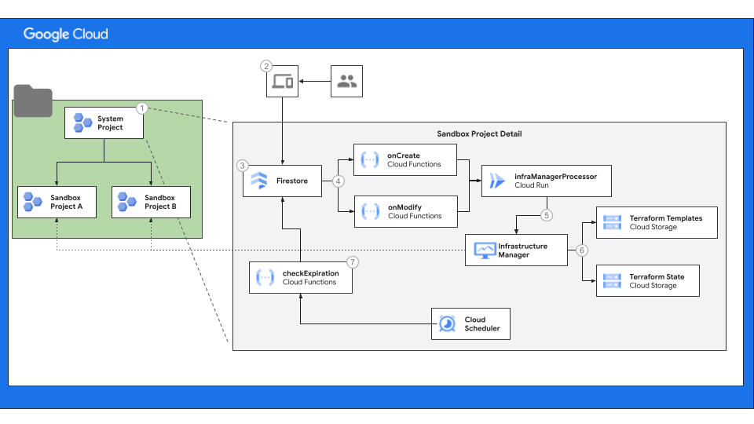

Sandbox Projects Reference Architecure¶
This architecture demonstrates how you can automate the provisioning of sandbox projects and automatically apply sensible guardrails and constraints. A sandbox project allows engineers to experiment with new technologies. Sandboxes are provisioned for a short period of time and with budget constraints.
Architecture¶
The following diagram is the high-level architecture for enabling self-service creation of sandbox projects.

- The system project contains the state database and infrastructure required to create, delete and manage the lifecycle of the sandboxes.
- User interface that engineers use to request and manage the sandboxes they own.
- Firestore stores the state of the overall environment. Documents in the database represent all the active and inactive sandboxes. The document model is detailed in the sandbox-modules readme.
- Firestore triggers are Cloud Run functions whenever a document is created or
updated. Create and update events are handled by Cloud Run functions
onCreateandonModify. The functions contain the logic to decide if a sandbox should be created or deleted. infraManagerProcessoris a Cloud Run service that works with Infrastructure Manager to kick off and monitor the infrastructure management. This is handled in a Cloud Run service because the execution of Terraform is a long running process.- Cloud Storage contains the Terraform templates and state used by Infrastructure Manager.
- Cloud Scheduler triggers the execution of sandbox lifecycle management processes, for example a function that check for the expiration of sandboxes and marking them for deletion.
Structure of the Repository¶
This repository contains the code to stand up the reference architecture and also create difference sandbox templates in the catalog. This section describes the structure of the repository so you can better navigate the code.
Examples¶
The /examples directory contains a sample Terraform deployment for deploying
the reference architecture and command-line tool to exercise the automated
creation of developer sandboxes. The examples are intended to provide you a
starting point so you can incorporate the reference architecure into your
infrastructure.
GCP Sandboxes¶
This example uses the Terraform modules from
/sandbox-modules to deploy the reference architecture and includes
instructions on how to get started.
Command Line Interface (CLI)¶
The workflows and lifecycle of the sandboxes deployed via the reference architecture are managed through the document model stored in Cloud Firestore. This abstraction has the benefit of separating the core logic included in the reference archiecture from the user experience (UX). As such the example command line interface lets you experiment with the reference architecture and learn about the object model.
Catalog¶
This directory contains a collection (catalog) of templates that you can use to deploy sandboxes. The reference architecture includes one for an empty project, but others could be added to support more specialized roles such as database admins, AI engineers, etc.
Sandbox Modules¶
These modules use the fabric modules to create the system project. Each module represents a large component of the overall reference architecture and each component can be combined into the one system project or spread across different projects to help with separation of duties.
Fabric Modules¶
These are the base Terraform modules adopted from the Cloud Fabric Foundation. The fabric foundation is intended to be vendored, so we have copied them here for repeatbility of the overall deployment of the reference architecture.
We recommend that as you need additional modules for templates in the catalog that you start with and vendor the modules from the Cloud Foundation Fabric into this directory.